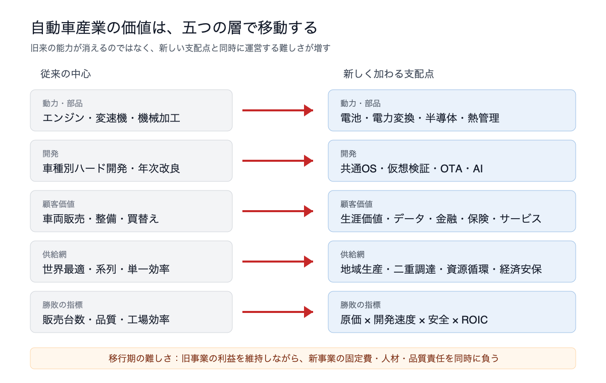
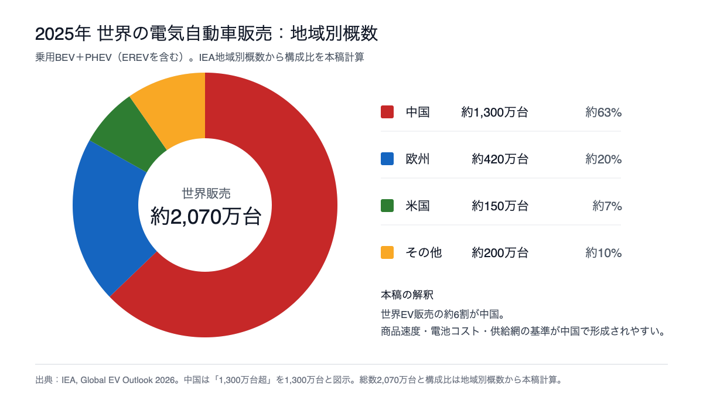
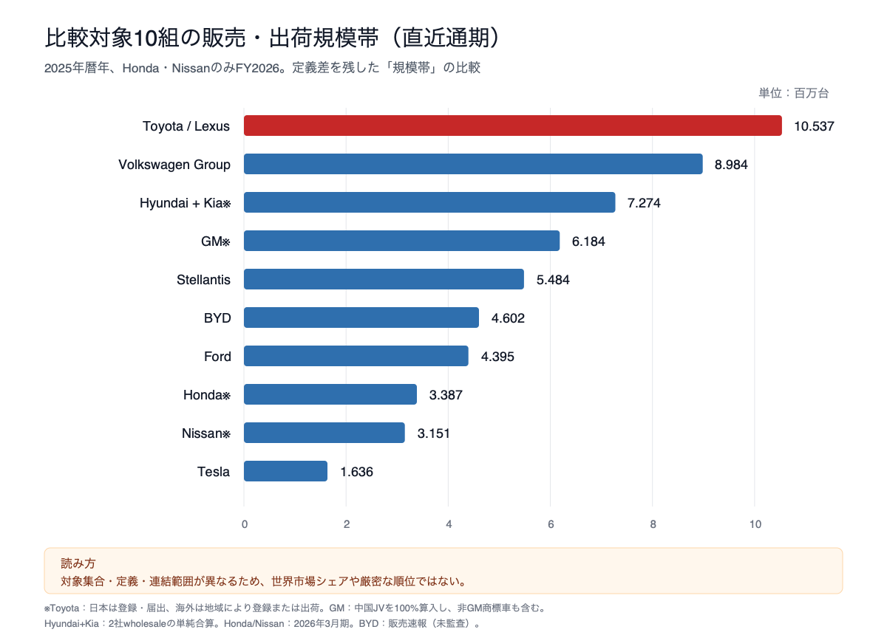
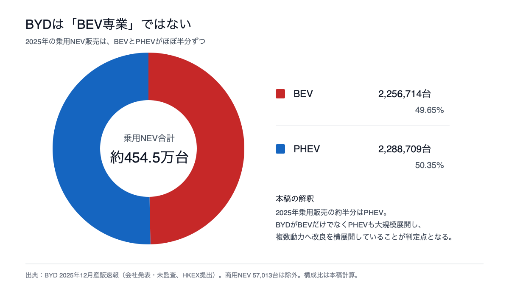
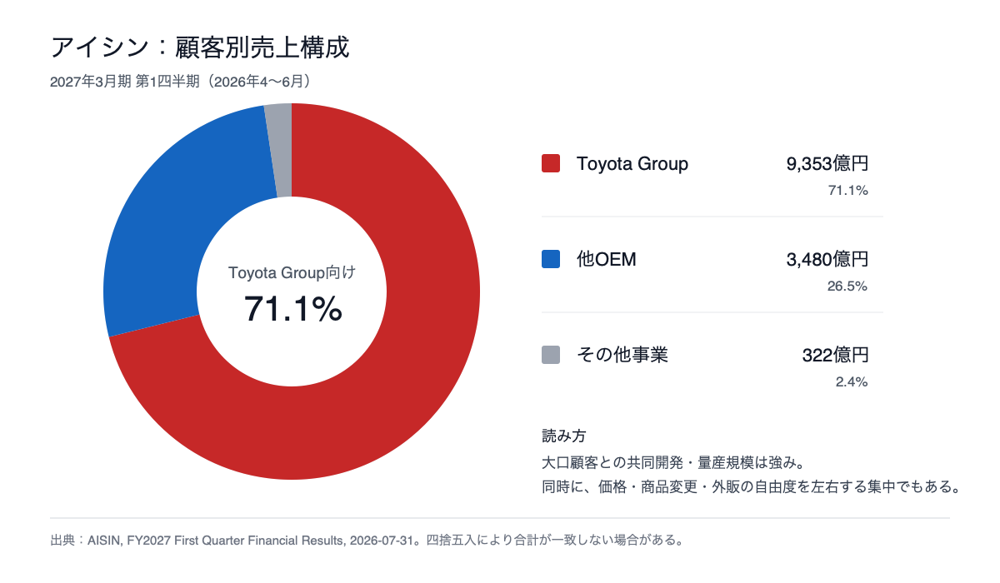
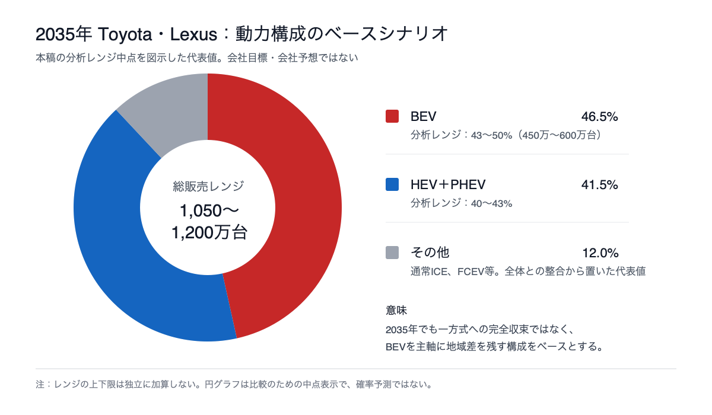

トヨタグループの将来予測――2035年，「自動車会社」はどこまで変わるのか
結論から言えば、2035年のトヨタグループは「自動車をやめたモビリティ企業」にはなっていないだろう。むしろ年間1,000万台規模の車両事業を中心に、電池、ソフトウェア、金融、物流、エネルギーを重ねた企業群へ段階的に変わっている可能性が高い。
その将来を決めるのは、「ハイブリッドか、電気自動車か」という二者択一ではない。ハイブリッド車（HEV）で稼げる今の時間を、競争力のあるバッテリーEV（BEV）とソフトウェア定義車両（SDV）を育てる速度へ変換できるか。それが最大の分岐点である。
なお、本稿でいう「トヨタグループ」は、トヨタ自動車に加え、デンソー、アイシン、豊田自動織機、トヨタ紡織、豊田通商などの主要企業を含む。ただし、各社は別法人であり、連結・持分・取引関係も異なる。グループを一枚岩として扱わないことが、将来を読む前提となる。
学術研究が示す前提――変わるのは動力源だけではない
自動車産業の変化を「エンジンが電池へ置き換わる話」に限定すると、将来を読み誤る。2025年のシステマティックレビューは、電動化、自動運転、コネクティビティ、デジタル化を中核的な変化とし、AI、クラウド、ビッグデータをそれらの実現技術に位置づける。さらにIT企業との競争、産業政策、環境規制、消費者選好までが同時に作用すると整理している。28
将来が一方向に決まっているわけでもない。技術とビジネスモデルを組み合わせたZieglerとAbdelkafiの研究は、BEV中心、技術多様化、サービス中心BEV、最大限の多様性という四つのシナリオを提示した。専門家評価ではサービス中心BEVが上位だったが、シナリオ間の差は明確な一本の潮流を断定できるほど大きくなかった。29 ただし、この研究はトヨタのHEV・PHEV戦略を検証したものではない。トヨタのマルチパスウェイは、この不確実性に対する保険として合理性を持つ一方、サービス・BEV中心へ収れんした場合には固定費と移行速度の弱点になり得る、というのが本稿の仮説である。
より重要なのは、誰が付加価値を取るかである。Volkswagen、Stellantis、Toyota、Hondaのデジタル・モビリティ事業を扱った研究は、車両販売後のデジタルサービスでは価値創出が顧客・データ中心へ移り、完成車メーカーが技術・サービス企業と意思決定力を分け合う可能性を示す。30 日本自動車研究所の2026年報告も、SDVを車載ソフトの追加ではなく、ハードウェア、ソフトウェア、クラウド、社会的価値を統合し、競争・協調領域、機能安全、責任分担、データ統制を組み直す設計思想として捉える。31
この変化は部品会社と雇用にさらに強く表れる。電動化のグローバル価値連鎖を扱った複数事例研究は、グループ内工場での新モデル獲得競争、従来型部品会社の退出リスク、電池メーカーによる階層秩序への挑戦、工程・地域ごとの雇用量と技能構成の再配分を主要な変化に挙げる。32 RIETI Discussion Paperの著者らがMarkLinesの主要25完成車グループの供給関係を分析したところ、2018〜2024年にデータ上のICEパワートレーン関連部品の供給関係数が約半減する一方、電動部品では中国中心の共通サプライヤー関係が増えた。これは調達額、物量、雇用の半減を意味しない。トヨタ系中国合弁がBYD系から電池やeAxleの供給を受ける関係も確認されたが、トヨタ本社全体を「BYD依存」とみなすこともできない。33 経済安全保障上は分断を求められながら、競争力のためには中国の供給網と結び付く。この矛盾は、トヨタだけでなくアイシンなど系列部品会社の将来を左右する。
自動車業界そのものが変わる――五つの競争が重なる時代
2020年代後半の自動車産業は、「内燃機関からBEVへ」という一本の置換曲線では説明できない。動力・部品、開発、顧客価値、供給網、経営指標という五つの層で、旧来の能力に新しい支配点が追加されている。
第一に、動力・部品ではエンジンと変速機に加え、電池、パワー半導体、電力変換、熱管理の統合が競争力を決める。第二に、開発では車種ごとのハードウェア最適化だけでなく、共通OS、仮想検証、OTA、AIを使って発売後も車を更新する能力が必要になる。第三に、顧客価値は販売時の粗利から、金融、保険、整備、充電、データ、サービスを含む生涯価値へ広がる。第四に、供給網は世界最適だけでなく、関税、補助金、資源、サイバー、経済安全保障を考えた地域最適との二重運営になる。第五に、勝敗の指標も販売台数と品質だけでは足りず、原価、開発速度、ソフトウェア安全、ROICを同時に測る必要がある。

ここには三つの逆説がある。BEV販売が増えても、HEV・PHEV・商用FCEVを含む動力の地域差は当面残る。世界規模が必要なのに、工場、電池、ソフトウェア、データは地域ごとに分断される。ソフトウェア企業のような速度が求められる一方、事故・リコール・サイバー障害への責任は重い製造業のままである。つまり、新規参入企業がすべてを置き換えるのでも、既存大手の規模が自動的に守られるのでもない。
2025年、世界の電気自動車（乗用BEV＋PHEV、EREVを含む）販売は2,000万台を超え、新車の約4台に1台となった。中国は1,300万台超で世界販売の約6割を占め、生産は1,600万台で世界の約4分の3、中国からの輸出は250万台を超えた。420 本稿では、この規模から、電池コスト、商品更新、車載デジタル機能、サプライヤー基準が中国市場で形成されやすいとみる。一方、欧州は規制、米国は大型車・政策変動、日本はHEV、新興国は価格とインフラという別々の条件で動く。

そこで以下では、各社を販売台数やBEV比率の一本の順位表にせず、「何を自社に残し、何を他社と共有し、既存利益をどこへ移すか」という賭け方で比較する。
世界の競争地図――各社は違う未来に賭ける
トヨタの将来を比較する時、世界のメーカーを一本の順位表に並べるだけでは足りない。各社は、世界規模で複数の動力を持つ、電池から車両まで統合する、提携で開発資産を共有する、大型車と商用車の利益をソフトへ移す、AI・充電・エネルギーまで一体化する、という別々の答えを試している。
以下の分類は各社の主な賭けを示す便宜的な整理で、相互排他的ではない。たとえばVolkswagenは大規模・複数動力であると同時に、電池と共通ソフトにも投資している。
| 競争モデル | 主な企業 | トヨタに突き付ける問い |
|---|---|---|
| 大規模・複数動力 | Toyota、Volkswagen、Hyundai/Kia、Stellantis | 多方式は需要への保険か、二重固定費か |
| 電池・車両・ソフト統合 | BYD、一部の中国勢 | 品質を守りながら、商品と原価の学習周期を短縮できるか |
| 提携・共通基盤型 | Renault、Suzuki、Mazda、SUBARU | 共通基盤を使いつつ、ブランドと車両統合で利益を残せるか |
| 北米キャッシュ＋サービス | GM、Ford | SUV・ピックアップ・商用の利益をEV・ADAS・継続課金へ移せるか |
| AI・エネルギー統合 | Tesla、Xiaomi | 販売台数より、更新・自動運転・エネルギーで生涯価値をとれるか |
直近通期の台数では、図の比較対象中でToyota・Lexusが最大である。ただし、Toyotaのworldwide salesは日本では登録・届出、海外では地域により登録または出荷で、他社もdeliveries、shipments、wholesalesが混在する。GMの618.4万台は中国JVを100%算入し、非GM商標車も含む一方、HyundaiとKiaは二社wholesaleの単純合算である。HondaとNissanだけは2026年3月期で、BYDは会社発表の販売速報（未監査）を使う。図は世界市場シェアや厳密な順位ではなく、投資と販売網を支える規模帯の比較である。41

日本――Hondaは「HEV＋ソフト」、Nissanは再建の反証実験
HondaとNissanの単独販売規模は、Toyota・Lexusのおおむね3分の1である。したがって日本勢の論点は台数の追随だけでなく、電池、SDV、工場のどこを共同化し、ブランドと車両統合のどこを独自にするかにある。
Hondaは、北米で予定していたEV三車種を中止し、今後三年を四輪事業の再建期間とした。2026年3月期の連結営業損失4,143億円にはEV関連営業損失1兆4,536億円が含まれ、これを除く会社定義の調整後営業利益は1兆393億円だった。ただし、この調整後利益は二輪や金融を含む連結値で、四輪HEV単独の収益を示さない。会社は2030年3月期末までに次世代HEVを15車種へ展開し、ASIMO OSをEVとHEVの共通基盤にする計画である。本稿では、これをEV撤退ではなく、HEVでキャッシュを立て直し、ソフトを動力横断で広げる再建策とみる。トヨタに対する日本勢の主な比較軸は、BEV台数よりHondaのHEV原価、北米供給力、共通ソフトである。35
Nissanはまず「成長するか」より「現金を残して再建できるか」を問う段階にある。2026年3月期は世界小売315.1万台、営業利益率0.5%、自動車フリーキャッシュフローはマイナス4,808億円だった。2026年4〜6月は連結営業利益779億円へ回復したが、一時利益320億円を含み、自動車フリーキャッシュフローはマイナス3,239億円、同ネットキャッシュは9,692億円だった。本稿では、世界販売300万台以上、自動車事業の継続黒字と現金流出の停止を再建の判定線とする。Hondaとの経営統合協議は2025年2月に終了した一方、電池、eAxle、SDV等の案件別協業は残るため、基準シナリオは大型合併ではなく、共同化する基礎層と競争する上位層の切り分けである。35
Toyotaとの結び付き方は三社で異なる。Suzukiは小型車・インドを軸に車両相互供給と共同BEV基盤、Mazdaは米国JV工場とToyota Hybrid System、SUBARUはToyotaが2026年3月31日現在で自己株式控除後21.46%を保有する関係の下で共同BEVとTHS系HEVを使う。これらは本稿冒頭で定義した中核の「トヨタグループ」と同一ではなく、少数持分と案件別協業からなる外縁の提携圏である。本稿では、この外縁が投資規模を補う一方、仕様調整と意思決定を複雑にする可能性があるとみる。42
中国――BYDの本質は「安いBEV」より短い学習ループ
BYDの2025年NEV販売は商用車を含め460.2万台だった。商用NEV約5.7万台を除く乗用車は、図のとおりBEVとPHEVがほぼ半々である。BYDはBEV専業ではない。同社はBlade Batteryやe-Platform等を通じ、電池、電動駆動、車両制御を近接して開発する体制を公表している。本稿では、半導体、熱管理、ソフトまでを含む仕様決定の近さが、BEVとPHEVの双方へ改良を反映する学習ループを短くしていると解釈する。36

ただし、垂直統合は固定費と稼働率リスクも内部化する。2026年上期のBYDのNEV販売は前年同期比15.7%減となり、第1四半期の親会社帰属利益も55.4%減少した。一方、上期の乗用車・ピックアップ海外販売は78万9,367台だった。本稿では、次の競争軸は中国内の値下げと台数だけでなく、海外現地生産の稼働率、品質、保証費、残価、サービス網、地域別利益へ移ったとみる。36
中国勢も一枚岩ではない。本稿では、Geelyを複数ブランドと共通基盤、SAICとCheryを輸出・海外販売網、Changanを傘下AVATRにおけるCATL・Huaweiとの協業、GWMをSUV・ピックアップと複数動力、Xiaomiをスマートフォン・車・IoTを結ぶ「Human × Car × Home」で差別化するモデルと整理する。37 中国勢の脅威を「安いBEV」だけとみなすと、PHEV、プラットフォーム供与、現地生産、デジタル顧客接点への広がりを見落とす。
欧州――Volkswagenは、トヨタの「もう一つの鏡」
Volkswagen Groupは2025年に898.4万台を納車し、BEVは98.3万台、10.9%だった。欧州の規制対応、PowerCoの電池、Rivianとの共通SDV基盤を同時に進める一方、2025年の営業利益率は2.8%に低下した。世界規模、多ブランド、中国、電池、ソフトを抱えるVWはトヨタに最も似た比較対象である。VWが2027年以降にVW-Rivian共同開発の基盤を複数ブランドへ広げながら利益率を戻せば、トヨタの慎重さは強みではなく遅れになる。逆に、電池工場、ソフトウェア、ブランド別仕様が重複すれば、大きさそのものが固定費になる。38
その他の欧州勢は、同じ問題へ別の答えを出している。Stellantisは2025年の巨額な減損・商品計画見直し費用の計上後、BEV、PHEV・EREV、HEV、ICEを地域別に再構成する。RenaultはAmpere、Google、他社向け生産を使い、規模不足を二年開発と資産回転で補おうとする。BMWとMercedes-Benzは、マルチパワートレインを維持しつつ、Neue Klasseの電池・車両電子基盤やMB.OSを高価格帯で回収する。38 「欧米勢はEVを諦めた」のではない。各社はBEV・電池・ソフトへの投資を続けながら、需要と政策に応じて投入時期、工場能力、パワートレイン構成を組み直している。
米国と韓国――利益源を壊さずに次へ移せるか
GMは北米の大型車の利益、複数価格帯のEV、OnStar、Super Cruiseを持ち、トヨタと最も近い「現在の利益で次を買う」モデルである。Fordは2025年にModel eのsegment EBITが48.1億ドルの赤字だった一方、Ford Proは68.4億ドルの黒字だった。ハイブリッドを拡大し、EREVと低価格BEVを開発しながら、車両データとサービスを商用顧客へ提供する戦略は、トヨタの商用車・金融・ソフト連携を測る物差しになる。39
Teslaは2025年の納車が163.6万台で、Toyota・Lexusの六分の一未満だったが、台数だけで軽視できない。運転者の監督を要するFSD（Supervised）、将来の自動運転車、AI計算、急速充電、蓄電が利益になれば、完成車の粗利以外へ競争を移せる。ただし2025年の営業利益率は4.6%、2026年4〜6月は1.4%まで下がった。無監督走行の安全、責任、規制承認と、車両粗利から切り分けた継続収益はまだ検証対象である。39
Hyundai MotorとKiaは、二社の2025年wholesaleを単純合算すると727.4万台となる。両社はHEVとBEVを増やし、EREVの導入、米国現地生産、幅広い価格帯の展開を計画する。40 これは、マルチパスウェイ自体はトヨタ固有の差別化ではなく、原価、商品周期、地域生産、利益率で優劣が決まる業界標準になる可能性を示す。
ここまでを一つの物語にすれば、2030年までの勝者はBEV比率が最も高い会社ではない。既存車の利益を壊さず、BEVの限界利益を黒字化し、共通ソフトを複数車種へ品質を保って展開した会社である。2035年までは、そこに充電、金融、保険、整備、データ、自動運転を含む車両の生涯価値と、安全責任を長期に負える能力が加わる。以降は、この比較から得た三つの判定軸――①既存車の利益を移行投資へ変える力、②中国勢に近い商品・原価の学習速度、③共通基盤と品質責任を両立する力――でトヨタを見る。利益、電池、Arene、グループ再編は別々の話ではなく、この三問への答えである。
現在地――強い利益基盤と、まだ小さいBEV
トヨタ自動車の2026年3月期売上高は50兆6,850億円、営業利益は3兆7,662億円だった。営業利益率は前期の10.0%から7.4%へ下がったが、研究開発費は1兆5,228億円、設備投資は2兆3,906億円に達した。単純合計は約3.9兆円だが、設備投資には維持更新や既存事業も含まれ、全額が電動化・ソフトウェア向けではない。それでも複数技術へ同時投資できる財務規模は、移行期の最大の強みである。1
足元の利益には圧力がある。2027年3月期の会社予想は売上高54兆円、営業利益3.4兆円、営業利益率6.3%である。2026年4〜6月の営業利益率は7.9%だったが、親会社株主帰属利益には株式売却益など一時要因が大きく含まれるため、純利益の単純な年率換算はできない。2
一方、電動化の中身を見ると、課題もはっきりする。2026年4〜6月のToyota・Lexus販売255.2万台のうち、HEV、PHEV、BEV、FCEVを合わせた「電動車」は141.0万台、55.3%だった。だが、そのうちHEVが123.8万台、BEVは11.4万台である。電動車比率は高いが、BEV比率はまだ低い。2
2027年3月期の会社見通しも、Toyota・Lexus販売1,050万台に対してHEV 508.8万台、PHEV 28.4万台、BEV 53.3万台である。BEVは急増するものの、当面の収益と販売を支えるのはHEV、PHEV、高採算のSUV・ピックアップ、そして金融事業だ。
トヨタは2026年6月提出の年次報告書でも、2030年のBEV世界販売350万台を目標としている。ただし、これは顧客需要に応じて供給体制を準備する際の基準であり、販売は柔軟に運用すると説明する。3 2027年3月期予想の53.3万台から暦年2030までを約4年と置くと、350万台には単純計算で年平均約60%の成長が必要だ。したがって350万台は、現時点では最も可能性の高い予測値というより、製品、電池、工場、需要がすべて順調にそろう上振れケースに近い。
2030年――「二つのエンジン」で走る会社
本稿のベースシナリオでは、2030年のToyota・Lexus販売を1,030万〜1,130万台、うちBEVを180万〜260万台、HEVとPHEVを570万〜670万台、営業利益率を7〜9%とみる。これは会社目標ではなく、公開情報を基にした分析レンジである。
2030年までのトヨタは、二つのエンジンで走る。一つ目は、HEV、PHEV、高採算車、金融が生むキャッシュである。二つ目は、次世代BEV、電池、ソフトウェア、生産革新への投資だ。前者を急に捨てれば利益と地域対応力を失う。しかし前者に安住すれば、2030年代の競争力を失う。この両立がマルチパスウェイ戦略の本当の意味になる。
世界全体では、BEVとPHEVの拡大は続く。IEAは2025年の電気自動車販売を2,000万台超、新車の約25%とし、2026年は2,300万台、28%を予測する。IEAの現行・公表政策を前提とする探索的シナリオでは、BEVとPHEVを合わせた新車比率が2035年に世界でおおむね半分、中国では90%超へ上昇する。4 この環境下では、HEVで強いことは移行資金を得る優位になるが、BEVへの移行を不要にする免罪符にはならない。
中国――最大の弱点であり、変化を迫る実験場
最も厳しい市場は中国だ。電池コスト、車載ソフトウェア、運転支援、商品更新の速度で中国メーカーが先行し、価格競争も激しい。2025年の中国の電気自動車比率は約55%で、BEVの約70%が平均的な内燃機関車より安くなった。2026年4〜6月のトヨタの中国小売は32.4万台と前年同期比28%減り、市場全体の落ち込みよりも大きかった。トヨタはFAW、GAC、BYDなどとの協業に加え、上海にLexusのBEV・電池開発生産会社を設け、2027年以降に年10万台規模で生産を始める計画である。5
ただし年10万台は、中国市場全体から見れば小さい。必要なのは工場の増設だけではなく、中国の人材、部品、デジタルサービスを使い、企画から発売までの時間を短くすることだ。ベースシナリオでは、中国でのシェア低下は続くが撤退には至らず、現地開発と提携を深めた地域特化型の事業へ変わると予測する。
北米――利益の柱だが、現地化コストも大きい
北米ではHEV、SUV、ピックアップ、金融の組み合わせが引き続き強い。ノースカロライナの約140億ドル規模の電池工場はHEV、PHEV、BEVに対応し、トヨタは2026年7月、テキサス州サンアントニオ工場へ36億ドルを投じ、2030年に年15万台の能力を追加すると発表した。6
需要構成もこの投資を支える。2026年4〜6月の米国新車販売ではHEVが16%で過去最高となり、BEVは6%、PHEVは1.4%だった。14 ただし、この差を恒久的なものとみなすべきではない。規制、燃料価格、電池価格、充電網が変われば、最適な現地生産構成も変わる。
これは需要対応であると同時に、関税と地政学への保険でもある。日本車・部品に対する米国の関税は合計15%となり、USMCAも2026年の共同見直しで協議が続く。24 トヨタは米国関税の年間影響について、従来想定の約1.38兆円から約700億円縮小すると説明しており、単純差引きでは約1.31兆円となる。2
北米は販売・商品ミックス上の主要な利益源である。ただし地域別営業損益は2026年3月期に赤字となり、2027年3月期第1四半期に黒字回復したばかりで、関税、移転価格、現地投資を含む採算変動は大きい。12 ベースシナリオで高収益を保つ条件は、現地調達、工場稼働率、価格転嫁を含む投下資本効率である。
欧州、日本、グローバルサウス――地域差がトヨタを支える
欧州では排出規制がBEV比率を押し上げるため、HEVでの優位だけでは足りない。現行法は2035年の新車CO2排出を2021年比100%削減する基準であり、欧州委員会が示した90%への修正は、2026年8月時点では成立済みの法律ではなく提案である。15 2020年代後半にBEVの商品力と価格を改善できなければ、規制対応コストと値引きが利益を圧迫する。
一方、日本、ASEAN、インド、中東、アフリカ、中南米では、充電網、電力構成、所得、走行距離が大きく異なる。本稿ではHEV、PHEV、小型車、商用車が相対的に長く残るとみるが、「BEV化が遅い地域」と一括りにはできない。2025年の日本では電気自動車が3%未満、HEVが約3分の1だったのに対し、ASEANの電気自動車販売は50万台を超え約20%へ倍増し、タイでは新車の約25%、その約75%が中国製だった。インドは約4%と低い一方、販売は75%増えた。15 トヨタの優位は地域差そのものではなく、この異なる速度を国別の商品、価格、金融で処理できる場合に限られる。
技術の未来――全固体電池より先に問われるもの
トヨタは2023年、車両効率の改善を含めた次世代BEVの航続距離1,000km、10〜80%充電20分以下を開発目標として示した。測定モードは明示されず、2026年8月時点で、この仕様の量産達成は確認できない。同時にギガキャスト、車体の3分割モジュール、自走式生産を構想し、LFPを使う普及型電池、高性能液系電池、2027〜2028年の実用化を目指す全固体電池を並行開発している。3
しかし、将来を左右するのは実験車の航続距離ではない。2026年公表のLexus TZプロトタイプは日本仕様で航続約620km、10〜80%充電約35分とされ、トヨタが掲げる次世代BEVの1,000km・20分以下という開発目標を量産車で実証したものではない。試験モードも異なるため単純比較はできないが、目標と確認済みの性能を分けて読む必要がある。16 量産歩留まり、電池1kWh当たりの原価、急速充電時の耐久性、保証、工場投資、そして発売までの時間が重要である。
ベースシナリオでは、全固体電池は2027〜2028年に限定的な車種・数量から始まり、2030年時点でも主力は液系リチウムイオンとLFPだとみる。提携先の出光興産が計画する固体電解質の大型パイロット設備は2027年完成、年産数百トン規模であり、経済産業省も本格実用化を2030年頃と置く。21 全固体電池が本当に形勢を変えるのは、2030年代前半にGWh単位で量産でき、既存電池に対するコスト差を縮めた場合である。「全固体電池が完成すれば逆転」という見方は単純すぎる。
PHEVはBEVへの単なる過渡技術ではなく、地域によっては電池量を抑えながら日常走行を電動化する役割を持つ。2026年のRAV4 PHEVは、トヨタ社内測定でEV走行距離を従来の約95kmから約150kmへ伸ばした一方、次世代PHEVの会社目標は200km超である。22 実際の充電頻度と電動走行率が低ければCO2削減効果も下がるため、販売台数だけでは評価できない。
水素も同様だ。Toyota・LexusのFCEVは2026年3月期実績も2027年3月期予想も約1,000台であり、乗用FCEVがBEVに代わって主流になる可能性は低い。一方、会社が掲げる2030年のFC搭載車10万台は外販システムを含む。トヨタが2026年7月にダイムラートラック、ボルボ・グループと大型商用向け燃料電池会社cellcentricへの対等参画で合意したことも、水素の重点が大型商用、定置電源、船舶、鉄道、オフロードへ移っていることを示す。27 水素事業は「乗用車の次」ではなく、「電池が重くなりすぎる用途を補完する事業」と考える方が現実的である。
ソフトウェア――売上より先に、開発速度を変える
ソフトウェア基盤Areneは、新型RAV4で初めて量産導入され、マルチメディア、音声、表示、Toyota Safety Senseの一部開発と検証、顧客の同意に基づく車両データ活用に使われた。ソフトウェア再利用や開発期間短縮は会社の狙いだが、短縮率、OTA頻度、搭載累計などの効果指標はまだ開示されていない。Woven Cityは2025年9月にPhase 1を正式始動し、限定された住民と企業・研究者が、移動、ロボット、エネルギー、金融などの実証を始めた。8
2030年までにAreneやWoven Cityが自動車販売に匹敵する利益を直接生む可能性は低い。最初の価値は、開発期間の短縮、品質向上、OTA更新、顧客の同意に基づく車両・走行データの活用、車両と金融・保険・サービスの連携に現れるだろう。
つまり、トヨタのソフトウェア戦略を評価する指標は「サブスクリプション売上」だけではない。Arene搭載車種の数、OTAの更新頻度と成功率、不具合修正までの時間、ソフトウェア共通化率、開発期間、安全・品質、車両データの権利、外部クラウドや半導体基盤の代替可能性が重要になる。2035年に継続課金が大きな収益源になるとしても、その前提は使い続けたいサービスを作れることであり、課金機能を増やすことではない。
自動運転でも、発表と事業化を区別する必要がある。Waymoとの協力は次世代プラットフォームを検討する予備合意で、確定した量産日程ではない。e-Paletteも発売時点はレベル2相当で、レベル4搭載車の市場導入目標は2027年度である。17 2030年までに先行しやすいのは、個人所有車の広域完全自動運転より、運行範囲を限定した移動サービスだろう。
グループ再編――系列の維持から、役割の組み直しへ
世界競争でトヨタが使う組織は二層ある。内側は、デンソー、アイシン、豊田自動織機、豊田通商など、資本・取引・人材を長期に組み替える中核グループである。外側は、Suzuki、Mazda、SUBARUなどと、車両、工場、電動基盤を案件別に共有する提携圏である。前者では重複投資と資本効率、後者では開発規模と意思決定速度が主な論点になる。以下ではまず内側の再編を見る。
トヨタグループの変化は、車種より資本関係に表れ始めている。豊田自動織機の非公開化は完了し、同社は2026年6月1日に上場廃止となった。取引では、トヨタ自動車、デンソー、アイシン、豊田通商との持ち合いを原則解消しつつ、トヨタ自動車は議決権のない優先株で関与する仕組みが採られた。豊田自動織機には、フォークリフト、自動倉庫、物流ソフトウェア、環境対応動力を束ね、「物の移動」を担う役割が期待される。9
非公開化は長期投資と意思決定を速める可能性がある反面、価格の公正さ、少数株主保護、グループ内取引の透明性という課題を伴う。成功かどうかは「連携を強化した」という説明ではなく、重複投資の削減、新製品の投入速度、物流事業の利益率で判断すべきだ。
商用車でも再編が進む。日野自動車は三菱ふそうとの統合により2026年4月からトヨタの連結子会社ではなくなり、トヨタとダイムラートラックが新持株会社へ各25%出資する構造へ移った。10 これは、電動化・自動運転・認証対応の巨額投資を単独で抱えず、提携で規模を確保する動きである。
部品会社の役割も変わる。デンソーはFY2027〜FY2031の5年間に研究開発へ3.7兆円を投じ、電動化・知能化領域で約4兆円の売上、全社営業利益率10%超を目標に掲げる。11 アイシンも変速機やブレーキの強みを残しながら、eAxle、センシング、ソフトウェアへ投資し、2029年3月期（会社表記FYE2029）に売上5.3兆円、営業利益率6.2%を目指す。12
ただし、2026年4〜6月の営業利益率はデンソー4.4%、アイシン2.8%であり、目標との差は大きい。アイシンは顧客集中も高く、電動ユニットの数量増がそのまま高収益化を意味するわけでもない。26 目標値は将来予測ではなく、採算転換を検証する基準である。
アイシン単独分析――ATの「残存利益」を制御価値へ移せるか
アイシンは、トヨタグループの移行を最も見えやすく映す会社である。2026年4〜6月の売上高は1兆3,156億円、営業利益365億円、営業利益率2.8%。営業利益は社内計画を38億円下回り、売上の71.1%をトヨタグループ向けが占めた。

パワートレインユニット253万台のうち会社定義の「電動ユニット」は83万台で、前年同期比35.4%増えたが、この区分はHEVとeAxleの合計で、BEV向けの数量・売上・利益は分離できない。2634 会社は2027年3月期第1四半期の質疑で、当該eAxle数量増による同四半期売上への影響を見込んでいないと回答した。単一四半期の回答だけでは中長期の採算性は判定できないが、電動化の台数と電動化で稼ぐ力を分けて見る必要がある。
短期の強みと長期の弱みは同じ場所にある。AT、HEV・PHEVユニット、ブレーキ、アフターマーケットは、今後数年の利益と投資資金を生む。とりわけ地域ごとにBEV移行速度が異なる間は、ATとHEVの幅広い製品群が支えになる。しかし、BEV比率が上がれば従来型ATの総需要は減る。この顧客集中とは別に、地域別のパワートレイン数量では中国が半分超を占める。同市場の減産が2026年4〜6月の計画未達要因となったが、数量集中をそのまま売上・利益集中と読み替えることはできない。アルミ価格の転嫁にも3〜6カ月の遅れがあり、数量・価格・材料が同時に利益を揺らす。34
会社の中期計画は、既存事業を一斉に捨てるのではなく、AT、HEV・PHEV、ブレーキ、アフターマーケットの利益を伸ばしながら、eAxle、電池フレーム、電動ブレーキ、車両統合制御、センシング、乗降システムへ人材と資産を移す構造である。2029年3月期（FYE2029）に売上高5.3兆円、営業利益3,300億円、営業利益率6.2%、ROIC11%、ROE10%、2031年3月期（FYE2031）には営業利益率8%以上を目指す。12 製品別では2029年3月期にATの営業利益800億円超・ROIC約20%、PHEV・HEVは530億円超・約18%、ブレーキは450億円超・約11%という目標がある一方、eAxleやソフトウェアには同等の利益KPIがない。これは「売上を増やす計画」以上に、低い足元利益率を構造改革と高付加価値製品で引き上げられるかを検証する計画と読むべきだ。
SDV時代のアイシンの主戦場は、独自OSそのものより、ソフトウェアの指示を車両の動きへ変える実行層にある。駆動、回生協調ブレーキ、電動ブレーキ、ドア、乗員監視、センシングを統合し、OEMの車載基盤から再利用できる制御モジュールとして提供できれば、ハードウェアとソフトウェアの境界で価値を残せる。反対に、AreneなどOEM側がAPI、データ、更新権限を握り、eAxleやブレーキが仕様どおり動く交換可能部品になると、数量が増えても利益率は上がらない。OEMを対象としたデジタルサービス研究が示す依存関係はTier1にも及ぶ可能性があるが、その強さは本稿では検証できない。実際、アイシンは車両統合制御を価値領域に掲げる一方、BMW向けeAxleはBMW設計による受託生産である。自社設計・統合制御案件と受託生産案件の比率が、将来の付加価値を左右する。123031
資金配分では未配分のバッファが示されていない。2027〜2029年3月期の原資2.1兆円に対し、設備投資7,500億円、研究開発6,000億円、成長投資4,500億円、基礎還元1,500億円、追加還元1,500億円以上を計画し、最低額だけで原資を使い切る。ただし、これは会社の流動性や借入余力の枯渇を意味しない。前中期計画では3,000人の成長領域への配置転換・再教育を進め、新計画ではアイシン単体の制御・ソフト人材を2031年3月期までに40%増やす方針である。12 中国減産、価格転嫁遅れ、eAxle立ち上げ遅延が重なれば、設備・成長投資の時期、研究開発の配分、資産圧縮、株主還元、資金調達を組み替える可能性がある。
以下は本稿の分析シナリオであり、会社予想ではない。「2030年」は暦年末に近い状態を示し、会社の2029年3月期・2031年3月期目標を基準線としている。
| アイシンのシナリオ | 2030年末時点の姿 | 2035年への含意 |
|---|---|---|
| 上振れ | 営業利益率6〜8%。eAxle、電動ブレーキ、統合制御がトヨタ外にも広がり、ROICが上昇 | 駆動・制動・乗降を束ねる制御システム企業となり、AT減少を外販売上とソフト価値で補う |
| ベース | 2029年3月期の利益率6.2%目標をおおむね達成し、2031年3月期の8%目標へ改善途上。トヨタ依存は高い | ATは縮小するが、HEV/PHEV、ブレーキ、アフターマーケット、電動製品で段階移行 |
| 下振れ | 営業利益率5%未満。中国減産、AT縮小、eAxleの価格競争、ソフト人材不足が重なる | 電動ユニットの数量は増えても付加価値が電池・半導体・OEMソフトへ移り、減損と再編費用が増える |
見るべき指標は、電動ユニット台数ではなく、①eAxle・電動ブレーキ・統合制御の製品別利益、②トヨタグループ外売上比率、③中国事業の数量と利益、④制御・ソフト人材数、⑤成長領域のROIC、⑥AT設備・人員の転用率である。2029年3月期に利益率6%へ届かず、トヨタグループ向け比率が75%を超え、電動製品の増加が構造改革を除く増益につながらない場合は、本稿のベースシナリオを下方修正する。
他の部品会社と資本効率
完成車と部品会社の利害も常に一致するわけではない。トヨタ紡織は、Lexus関連BEV計画の中止に伴う過去の開発費回収を協議し、資産評価見直しの可能性も開示した。豊田通商は資源・循環・新興国投資の担い手だが、大規模な自己株取得後のネットDERは0.70倍と、会社が置く上限0.8倍へ近づいた。27 商品変更時の費用分担と、投資余力の違いまで見なければ、グループを一枚岩として誤解する。
ここで重要なのは、内燃機関関連を一斉に切り捨てることではない。残る需要からキャッシュを得つつ、人材と設備を電動化、熱管理、半導体、ブレーキ、ソフトウェアへ移せるかである。移行が遅ければ、2030年代に減損と再編費用が集中する。
資本効率の数字にも注意が要る。2026年4〜6月期のトヨタの親会社株主帰属利益には、豊田自動織機株の売却による約5,769億円の利益が含まれる。相互保有の解消に伴う自己株取得は、トヨタが約3.65兆円、デンソーが最大約3,136億円、アイシンが概算約461億円、豊田通商が概算約6,637億円に及び、ROEの分母を縮めた。18 ROE上昇をそのまま競争力向上とみなさず、継続的な営業利益、営業キャッシュフロー、ROICの改善と分けて評価する必要がある。
経営はROE20%を方向性を示す「North Star」と説明したが、2026年3月期実績は10.1%だった。18 自己株取得だけで差を埋めるのではなく、BEV、バリューチェーン、ソフトウェアを反復可能な利益へ変えられるかが問われる。
経営体制――財務とソフトウェアの経験が前面へ
2026年、近健太氏が社長に就任し、佐藤恒治氏は副会長・Chief Industry Officer、豊田章男氏は会長を続ける体制となった。近氏はCFOやWoven by ToyotaのCFO、Mobility 3.0 Officeを経験している。13
この経歴からは、今後の経営で資本配分、グループ再編、ソフトウェア投資の採算が重くなると推測できる。ただし、これは経歴に基づく推論であり、成果はまだ確認できない。複層的な指導体制が技術・産業・財務を補完する可能性がある一方、権限が曖昧なら意思決定を遅くする。取締役会の独立性と、失敗した投資を止める仕組みも重要になる。
見落としやすい制約――品質と供給網
開発速度を上げるほど、品質と認証は後工程ではなく競争力そのものになる。トヨタグループでは2023〜2024年に複数社で認証問題が表面化し、トヨタ自動車は是正策として経営関与、人員、記録、第三者監査を強化してきた。19 重要なのは「対策を発表したか」ではなく、短い開発周期やOTA更新の中でも、独立確認者、試験証跡、量産停止権限が機能するかである。
供給網にも二つの逆方向のリスクがある。公表済みの電池工場計画だけを見れば2030年需要を満たし得るため、セルは一時的な過剰能力になり得る。一方、中国への材料・精製集中は大きく、IEAの基準ケースでは2035年に銅とコバルトの供給不足が見込まれる。20 したがって「電池不足か余剰か」という一語では足りない。セル、正負極材、精製、磁石、物流を工程別に追う必要がある。
為替、材料、災害、物流はこの構造を一度に揺らす。トヨタの2027年3月期想定は1ドル160円、1ユーロ181円で、原材料などの悪化影響は約1.3兆円とされる。2026年熊本地震の影響は8月時点の通期予想に反映されず、中東向けの喜望峰迂回は輸送時間をほぼ倍増させる。25 円高、材料高、関税、物流障害が同時に起きれば、HEV利益による投資の防波堤は薄くなる。
2030年・2035年の三つのシナリオ
以下は公開情報から作成した分析レンジであり、会社予想でも統計的な確率予測でもない。外部環境と、トヨタ側の実行を次のように組み合わせる。
| シナリオ | 外部環境 | トヨタ側の実行条件 |
|---|---|---|
| 上振れ | HEV需要が長持ちし、米関税・USMCA、鉱物価格、物流が安定。中国勢の海外現地化は品質・残価・地域利益の確立に時間がかかり、欧米勢の共通ソフト展開も遅れる | BEV採算、Arene、柔軟生産が改善し、競合より短い商品周期と高い量産品質を両立 |
| ベース | 世界のBEV・PHEVは拡大し、中国・欧州が先行、米国・日本はHEVが粘る。BYD、中国勢、VW、Hyundai/Kiaも地域別に複数動力を拡大するが、車両外利益は限定的 | HEV利益をBEV・SDVへ移し、中国で縮小しつつ撤退を回避。規模と品質を保ちながら競合との原価・開発速度差を縮小 |
| 下振れ | 中国勢が海外でも現地生産、品質、残価、サービス網を確立し、VW・Hyundai/Kiaが複数動力と共通ソフトを高収益化。Hondaも低原価HEVとASIMO OSを広げ、GM・Ford・Teslaが車両外の継続収入を伸ばすなか、関税・円高・資源・物流ショックも重なる | BEV投入遅延、原価差、Arene横展開の停滞、品質問題により、既存利益から新領域への移転が競合より遅れる |
| シナリオ | 2030年の姿 | 2035年の姿 |
|---|---|---|
| 上振れ：製造力の再発明 | Toyota・Lexus 1,100〜1,200万台、BEV 300〜380万台、営業利益率9〜11%。次世代生産とAreneが開発・原価を改善 | 1,150〜1,300万台、BEV 700〜900万台、営業利益率10〜13%。電池・SDV・部品外販でも競争力 |
| ベース：二つのエンジン | 1,030〜1,130万台、BEV 180〜260万台、営業利益率7〜9%。HEV等で稼ぎながらBEVを拡大 | 1,050〜1,200万台、BEV 450〜600万台、営業利益率7〜10%。車両中心のモビリティ産業基盤へ |
| 下振れ：移行の谷 | 900〜1,020万台、BEV 100〜160万台、営業利益率3〜6%。中国、関税、開発遅延が重なる | 800〜980万台、BEV 250〜400万台、営業利益率2〜6%。地域に強い旧来型メーカーへ縮小 |
本稿の中心作業仮説はベースシナリオである。トヨタの財務力、生産力、販売網、HEVの強さから、急激に競争から脱落する可能性は低い。一方、世界のBEV・PHEV市場が拡大する速度と、現時点のBEV台数の差を考えると、2030年に一気にBEV首位級へ到達するとみるのも楽観的すぎる。
2035年のベースでは、Toyota・Lexus販売1,050万〜1,200万台のうち、BEVを約43〜50%（目安450万〜600万台）、HEVとPHEVを約40〜43%、残りを地域・用途に応じた内燃機関車、FCEVなどと置く。台数は総販売との組み合わせで変わり、各レンジの上下限を独立に加算しない。ソフトウェアと金融は車両事業を置き換えるのではなく、1台当たりの生涯価値と顧客接点を増やす層になる。

ただし販売構成は中間指標にすぎない。トヨタは車両1台当たりの平均温室効果ガス排出を2019年比で2030年に33%以上、2035年に50%以上減らす目標を掲げる。23 HEVやPHEVが残るベースシナリオの成否は、実走行の電動比率、車両効率、地域の電源構成まで含む結果で判定すべきである。
予測を更新するための19指標
今後、次の数字を追えば、どのシナリオへ近づいているかを判断できる。
- 2027〜2029年のBEV販売成長率が年40%超ならベースシナリオを維持できるか、50〜60%級を複数年続けて350万台へ接近できるか。
- BEVの増加が値引き頼みではなく、車両別採算の改善を伴うか。
- 中国市場に対するToyota・Lexus販売の差、現地BEVの受注、価格、商品更新周期と、ASEANにおける中国製EV比率。
- Arene搭載車種、OTA頻度、ソフトウェア再利用率、開発期間、品質指標。
- 米国のHEV/BEV比、関税・USMCA条件、北米の電池・車両現地生産比率と稼働率。
- EUの2035年法制と、Toyota・Lexusの欧州BEV/PHEV比率・平均CO2。
- 全固体電池の量産歩留まり、GWh規模、搭載車種、保証条件と、次世代生産のタクト・歩留まり・設備投資額。
- 希土類の輸出許可・域外価格差、電池材料価格、会社前提に対する為替差。
- アイシンのeAxle・電動ブレーキ・統合制御の製品別利益、トヨタ外売上、制御・ソフト人材と成長領域ROIC。
- デンソーなど他部品会社の電動化・ソフトウェア売上と利益率。
- 為替効果を除く営業利益率が7%以上へ戻り、ROEと同時に営業CF・ROICが改善するか。さらにBEV・SDV向け研究開発・設備投資、BEV採算の改善を併せて見て、既存利益が新領域へ移っているか。
- 品質、認証、サイバーセキュリティの重大問題が再発しないか。
- 豊田自動織機非公開化後に、具体的な統合効果と業績が開示されるか。
- BYDなど中国勢が、海外販売だけでなく現地工場の稼働率、地域別利益、品質、保証費、残価、サービス網を改善するか。
- VolkswagenとHyundai/Kiaが、BEVとHEVの双方を伸ばしながら利益率を回復し、共通ソフトを複数ブランド・車種へ展開するか。Hondaが次世代HEV原価を下げ、ASIMO OSをEV・HEVへ横展開するか。
- GM、Ford、Teslaが、EVの採算と、ADAS・商用ソフト・自動運転・エネルギーの継続収入、安全性、規制承認を分離して開示し、車両外の利益を実証するか。
- トヨタ側でも、接続車両数、サービス加入率・解約率、車両1台当たりの販売後粗利、金融・保険・充電利用率を開示し、生涯価値の拡大を確認できるか。
- Suzuki、Mazda、SUBARUとの共同車種・共通基盤が、投入時期、開発期間、原価、利益を改善するか。仕様調整や意思決定の遅れが増えないか。
- 車両1台当たり平均温室効果ガス排出の2030・2035年目標に対する進捗と、PHEVの実走行における電動走行率が改善するか。
結論――勝敗を分けるのは、選択肢の数ではなく変化の速度
2035年のトヨタグループは、年間1,000万台前後を販売する世界大手であり続ける可能性が高い。しかし、本稿のベースシナリオでは、中身は現在と同じではない。BEV比率は大きく上がり、Areneが車両開発の共通基盤として広がり、デンソーやアイシンの価値はエンジン周辺から電動化・半導体・熱管理・ソフトウェアへ移る。豊田自動織機は物流、豊田通商は資源・エネルギー・新興国、商用車連合は大型輸送を支える役割を強めるだろう。
それでも、未来を保証するものは販売規模でも、全固体電池の特許数でもない。中国市場での開発速度、BEVの原価、ソフトウェアの品質、グループ再編の透明性という地味な実行力である。
デジタルサービス研究や電動化の価値連鎖研究が示す可能性を踏まえると、販売台数を維持しても、電池、半導体、OS、クラウド、デジタルサービスへ利益が流れ、トヨタグループが車両の生涯価値を十分に獲得できなければ、産業内での影響力は低下し得る。これは本稿の推論である。アイシンの電動ユニットが増えるだけでは不十分なのと同じく、グループ全体でも「何台売ったか」から「どの価値を支配し、利益にしたか」へ評価軸を移す必要がある。3032
トヨタのマルチパスウェイ戦略が成功したと言えるのは、HEVを長く売ったときではない。HEVが生んだ時間と利益を使い、BEVとSDVでも世界水準の速度と採算を実現したときである。
出典・注
Toyota Motor Corporation, FY2026 Financial Summary, 2026-05-08. ↩
Toyota Motor Corporation, FY2027 First Quarter Financial Results and Q&A Summary, 2026-08-04. ↩
Toyota Motor Corporation, Form 20-F for the year ended March 31, 2026, 2026-06; Toyota Technical Workshop, 2023-06-13. ↩
International Energy Agency, Global EV Outlook 2026: Executive summary, 2026-05-20. ↩
Toyota Motor Corporation, FY2027 First Quarter Q&A Summary, 2026-08-04; International Energy Agency, Global EV Outlook 2026: Trends in electric cars, 2026-05-20; BYD, 2025 Sales Announcement, 2026-01-01; Toyota Motor Corporation, Shanghai BEV and Battery Company, 2025-02-05. ↩
Toyota Motor North America, Toyota Powers On New North Carolina Automotive Battery Plant, 2025-02-05; Toyota Announces $3.6 Billion Investment in San Antonio Plant, 2026-07-07. ↩
Toyota Motor Corporation et al., Toyota, Volvo Group and Daimler Truck AG sign binding agreement for Toyota to join cellcentric, 2026-07-27; Toyota Motor Corporation, Integrated Report 2025, 2026-02-27. ↩
Woven by Toyota, Arene Debuts in the All-New RAV4, 2025-05-21; Toyota Motor Corporation, Woven City Officially Launches, 2025-09-25. ↩
Toyota Motor Corporation et al., Toyota Group to Accelerate Collaboration Through Privatization of Toyota Industries, 2025-06-03; Toyota Industries Corporation, Announcements regarding Completion of Going-Private Transaction, 上場廃止日 2026-06-01. ↩
Toyota Motor Corporation et al., Definitive Agreements on Integrating Mitsubishi Fuso and Hino Motors, 2025-06-10; Toyota Motor Corporation, FY2027 First Quarter Financial Summary, 2026-08-04. ↩
DENSO CORPORATION, Mid-Term Management Plan “CORE 2030”, 2026-04-01. ↩
AISIN CORPORATION, FYE2029 Mid-Term Business Plan and Presentation, 2026-02-19. ↩
Toyota Motor Corporation, Changes to Board Members and Executive Structure, 2026-06-17; Kenta Kon Executive Bio, 2026-06-17. ↩
U.S. Energy Information Administration, Hybrid vehicles set a record, making up 16% of U.S. light-duty vehicle sales in 2Q26, 2026-07-27. ↩
European Commission, CO2 emission performance standards for cars and vans, 2026-08-16閲覧; Automotive Package, 2025-12-16; International Energy Agency, Global EV Outlook 2026: Trends in electric cars, 2026-05-20. ↩
Lexus, World Premiere of the All-New Lexus TZ, 2026-05-07; Toyota Motor Corporation, Toyota Technical Workshop, 2023-06-13. ↩
Toyota Motor Corporation, Waymo and Woven by Toyota, Preliminary Agreement on Strategic Partnership, 2025-04-30; Toyota Motor Corporation, Sales Launch of the e-Palette, 2025-09-15. ↩
Toyota Motor Corporation, FY2027 First Quarter Financial Results and Q&A Summary, 2026-08-04; Notice Concerning Recording of Gains on Sale of Shares of Subsidiaries and Affiliates, 2026-06-15; DENSO, Results of Tender Offer for Own Shares, 2026-06-02; AISIN, Results of Tender Offer for Own Shares, 2026-06-02; Toyota Tsusho, Results of Tender Offer for Own Shares, 2026-06-03. ↩
Toyota Motor Corporation, Report on Measures to Prevent Recurrence Following Correction Order, 2024-07-31; Fourth Progress Report, 2025-09-09. ↩
International Energy Agency, Global EV Outlook 2026: Manufacturing and trade, 2026-05-20; Global Critical Minerals Outlook 2026, 2026-07-16. ↩
Idemitsu Kosan, Final Investment Decision on a Large-Scale Pilot Facility for Solid Electrolytes, 2026-01-29; Ministry of Economy, Trade and Industry, Revised Battery Industry Strategy, 2026-06-02. ↩
Toyota Motor Corporation, All-New RAV4 PHEV, 2026-02-19; Integrated Report 2025, 2026-02-27. ↩
Toyota Motor Corporation, Integrated Report 2025, p. 55, 2026-02-27. ↩
The White House, Implementing the United States–Japan Agreement, 2025-09; Office of the U.S. Trade Representative, USMCA Joint Review Statement, 2026-07-02. ↩
Toyota Motor Corporation, FY2027 First Quarter Financial Results and Q&A Summary, 2026-08-04. ↩
DENSO, FY2027 First Quarter Financial Results, 2026-07-31; AISIN, FY2027 First Quarter Financial Results Presentation, 2026-07-31. ↩
Toyota Boshoku, FY2027 First Quarter Q&A, 2026-07-31; Toyota Tsusho, FY2027 First Quarter Presentation and Q&A, 2026-07-31. ↩
Koelmel, B., Brysch, A. and Bulander, R., “Transformation of the automotive industry: A systematic literature review on the technological drivers of transformation”, Design+, 2(1), 2025. ↩
Ziegler, C. T. and Abdelkafi, N., “Exploring the automotive transition: A technological and business model perspective”, Journal of Cleaner Production, 421, 138562, 2023. ↩
Pérez-Moure, H., Lampón, J. F. and Cabanelas, P., “Mobility business models toward a digital tomorrow: Challenges for automotive manufacturers”, Futures, 156, 103309, 2024. ↩
飯野信次ほか, 「SDVを軸とした自動車産業の構造変化と社会的価値の整理」, JARI Research Journal, 2026巻4号, 2026-04-10. ↩
Rísquez Ramos, M. and Ruiz-Gálvez, M. E., “The transformation of the automotive industry toward electrification and its impact on global value chains”, European Research on Management and Business Economics, 30(1), 100242, 2024; OECD, The future of the automotive value chain, 2024. ↩
経済産業研究所, 「主要自動車メーカー間の部品供給相互依存ネットワークの変遷」, 2025. ↩
AISIN CORPORATION, FY2027 First Quarter Financial Results Presentation and Briefing Q&A, 2026-07-31. ↩
Nissan Motor Co., FY2025 Financial Results, FY2026 First Quarter Results and Re:Nissan; Honda Motor Co., FY2026 Financial Results, 2026 Business Briefing, Strategic Reassessment of Automobile Electrification, Nissan-Honda SDV and Electrification Research and Termination of the Business Integration MOU. ↩
BYD, 2025 Sales Announcement, 2026-01-01; 2025 Annual Report; 2026 First-Half Sales Announcement; 2026 First-Half Overseas Sales; 2026 First Quarter Report; About BYD; e-Platform 3.0. 2025年・2026年上期の販売速報と2026年第1四半期数値は会社発表の未監査値。 ↩
Geely Automobile Holdings, 2025 Sales; SAIC Motor, 2025 Results; Changan Automobile, 2030 Strategy and Avatr; Great Wall Motor, 2025 Annual Report; Xiaomi, 2025 Results; Chery Holding, 2025 Results. ↩
Volkswagen Group, 2025 Deliveries, 2025 Annual Results, PowerCo Salzgitter and Rivian Joint Venture; Stellantis, 2025 Results and FaSTLAne Plan; Renault Group, FutuREady; BMW Group, 2025 Group Report; Mercedes-Benz Group, 2025 Results. ↩
General Motors, 2025 Results and Q4 2025 Letter to Shareholders; Ford Motor Co., 2025 Form 10-K; Tesla, 2025 Update and 2026 Second Quarter Update. ↩
Hyundai Motor Co., 2025 Annual Results and 2025 CEO Investor Day / 2030 Roadmap; Kia Corp., 2025 Results and 2026 CEO Investor Day. ↩
図2はToyota・Lexusのworldwide sales、Volkswagen・Teslaのdeliveries、Hyundai Motor＋Kiaのwholesales単純合算、GMのtotal vehicle sales、Stellantisのconsolidated shipments、BYDのNEV sales、Fordのwholesales、Hondaの持分法会社込み四輪グループ販売、Nissanの世界小売を使用する。GMは中国JVを100%算入し非GM商標車を含む。Honda・Nissanのみ2026年3月期、他社は2025暦年。定義・連結範囲が異なるため世界市場シェアではない。出典：Toyota, 2025 Production and Sales; Honda, FY2026 Results; Nissan, FY2025 Results。他社の公式資料は注36、38〜40に記載。 ↩
Toyota Motor Corporation, Suzuki-Toyota BEV Collaboration and Toyota-Mazda Business and Capital Alliance; Mazda Motor Corporation, Integrated Report 2025 and Mazda Toyota Manufacturing Begins Production; SUBARU, Stock Overview and Management Policy Update. ↩
本稿は公開情報に基づく事業シナリオ分析であり，投資助言ではありません。将来予測には不確実性があります。